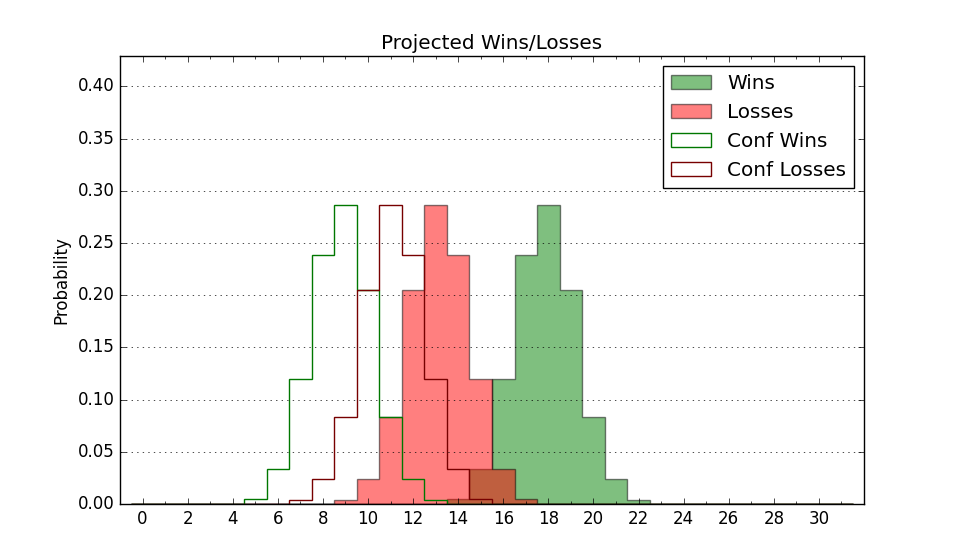

| Home | Game Probabilities | Conferences | Preseason Predictions | Odds Charts | NCAA Tournament |
| City: | Minneapolis, Minnesota | |
| Conference: | Big Ten (7th)
| |
| Record: | 5-5 (Conf) 14-7 (Overall) | |
| Ratings: | Comp.: 10.3 (82nd) Net: 10.5 (82nd) Off: 108.2 (115th) Def: 97.7 (59th) SoR: 15.0 (85th) |
| Remaining | ||||||
|---|---|---|---|---|---|---|
| Date | Opponent | Win Prob | Pred. | |||
| 2/6 | Michigan St. (18) | 33.7% | L 66-70 | |||
| 2/11 | @ Iowa (52) | 24.4% | L 75-83 | |||
| 2/15 | @ Purdue (2) | 4.5% | L 64-85 | |||
| 2/18 | Rutgers (106) | 71.8% | W 68-61 | |||
| 2/22 | Ohio St. (66) | 55.9% | W 71-70 | |||
| 2/25 | @ Nebraska (54) | 24.9% | L 69-77 | |||
| 2/28 | @ Illinois (12) | 10.7% | L 68-83 | |||
| 3/2 | Penn St. (88) | 65.8% | W 76-71 | |||
| 3/6 | Indiana (99) | 68.8% | W 75-69 | |||
| 3/9 | @ Northwestern (56) | 25.4% | L 66-73 | |||
| Previous | Game Score | |||||
| Date | Opponent | Win Prob | Result | Off | Def | Net |
| 11/6 | Bethune Cookman (317) | 95.9% | W 80-60 | -4.9 | 0.8 | -4.1 |
| 11/10 | UTSA (271) | 92.5% | W 102-76 | 13.7 | 2.0 | 15.7 |
| 11/16 | Missouri (122) | 76.1% | L 68-70 | -8.1 | -5.0 | -13.1 |
| 11/18 | USC Upstate (301) | 94.5% | W 67-53 | -24.8 | 13.9 | -10.9 |
| 11/21 | Arkansas Pine Bluff (324) | 96.2% | W 86-67 | -17.0 | 3.0 | -14.0 |
| 11/26 | (N) San Francisco (67) | 41.0% | L 58-76 | -10.4 | -21.7 | -32.1 |
| 11/30 | New Orleans (340) | 97.2% | W 97-64 | 4.4 | -1.6 | 2.8 |
| 12/3 | @Ohio St. (66) | 27.2% | L 74-84 | 4.0 | -12.4 | -8.4 |
| 12/6 | Nebraska (54) | 53.0% | W 76-65 | 1.4 | 8.6 | 9.9 |
| 12/9 | Florida Gulf Coast (248) | 90.7% | W 77-57 | -1.6 | 3.5 | 1.9 |
| 12/12 | IUPUI (361) | 98.7% | W 101-65 | 16.9 | -5.5 | 11.4 |
| 12/21 | Ball St. (249) | 90.7% | W 80-63 | 10.6 | -3.2 | 7.4 |
| 12/29 | Maine (224) | 89.4% | W 80-62 | 5.4 | -2.0 | 3.4 |
| 1/4 | @Michigan (100) | 40.6% | W 73-71 | 12.1 | 1.5 | 13.6 |
| 1/7 | Maryland (68) | 56.8% | W 65-62 | 2.7 | 1.6 | 4.4 |
| 1/12 | @Indiana (99) | 39.3% | L 62-74 | -13.5 | -1.7 | -15.2 |
| 1/15 | Iowa (52) | 52.4% | L 77-86 | -3.3 | -9.2 | -12.4 |
| 1/18 | @Michigan St. (18) | 13.0% | L 66-76 | 0.1 | 1.6 | 1.7 |
| 1/23 | Wisconsin (13) | 29.0% | L 59-61 | -6.0 | 11.2 | 5.2 |
| 1/27 | @Penn St. (88) | 36.1% | W 83-74 | 22.3 | 0.7 | 23.0 |
| 2/3 | Northwestern (56) | 53.6% | W 75-66 | -2.3 | 12.9 | 10.6 |
| Stats & Trends | |||||
|---|---|---|---|---|---|
| Current | Day | Week | Month | Season | |
| Composite | 10.3 | +0.6 | +0.7 | +2.3 | +6.0 |
| Comp Rank | 82 | +10 | +8 | +11 | +26 |
| Net Efficiency | 10.5 | +0.5 | +0.7 | +1.7 | -- |
| Net Rank | 82 | +6 | +7 | +10 | -- |
| Off Efficiency | 108.2 | -0.1 | -0.1 | -0.1 | -- |
| Off Rank | 115 | -- | -3 | -15 | -- |
| Def Efficiency | 97.7 | +0.7 | +0.8 | +1.8 | -- |
| Def Rank | 59 | +11 | +11 | +53 | -- |
| SoS Rank | 147 | +29 | +40 | +212 | -- |
| Exp. Wins | 17.9 | +0.6 | +0.6 | +1.4 | +4.1 |
| Exp. Conf Wins | 8.9 | +0.6 | +0.6 | +1.4 | +3.7 |
| Conf Champ Prob | 0.0 | -- | -- | -0.0 | -0.0 |

| Advanced Stats | ||
|---|---|---|
| Stat | Value | Rank |
| Off Eff FG % | 0.540 | 71 |
| Off Ast Ratio | 0.190 | 13 |
| Off ORB% | 0.297 | 115 |
| Off TO Rate | 0.145 | 156 |
| Off FT Ratio | 0.349 | 133 |
| Def Eff FG % | 0.461 | 41 |
| Def Ast Ratio | 0.140 | 159 |
| Def ORB% | 0.264 | 129 |
| Def TO Rate | 0.149 | 170 |
| Def FT Ratio | 0.267 | 44 |